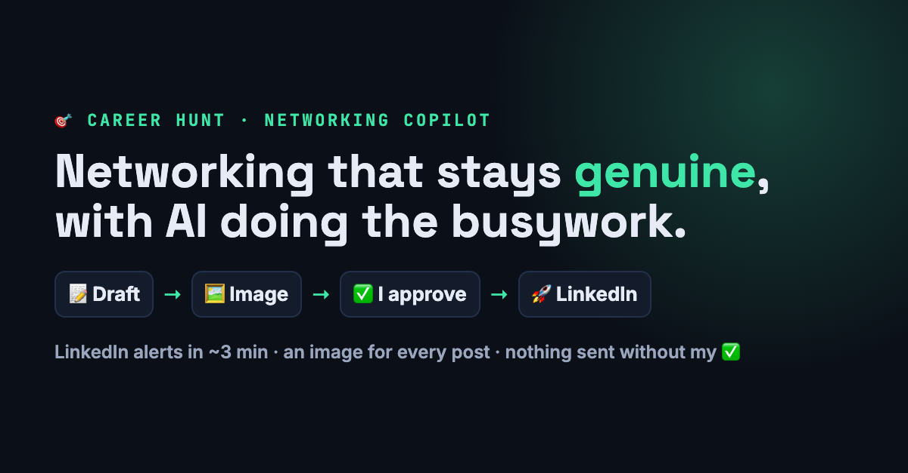

My Discord command center for job hunting and networking: it drafts LinkedIn posts with images, turns new connections and messages into suggested replies, and never sends anything without my approval.

New connections, invites and messages arrive by email. Career Hunt reads only those, read-only, and posts each one to Discord within about 3 minutes.
Each alert comes with a personal draft. I tap ✅ Approve, ✏️ Edit or ⏭️ Skip. Approved text comes back ready to paste, with a button to open that person on LinkedIn.
Post drafts get a designed image automatically: headline, key points, my name. Approve posts it through LinkedIn's official API.
Every new contact gets a card and a 3-day reminder. Daily check-ins track my streak, and a weekly scorecard keeps me honest.